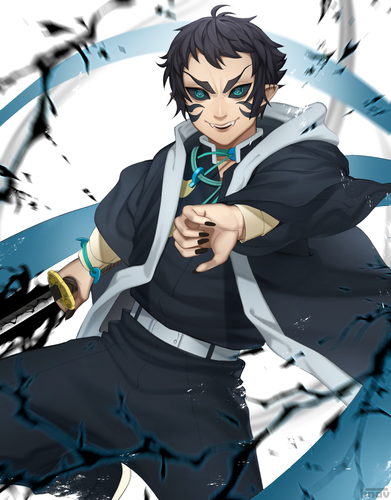
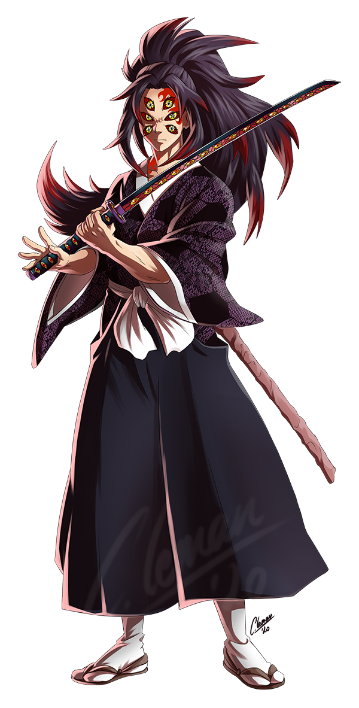
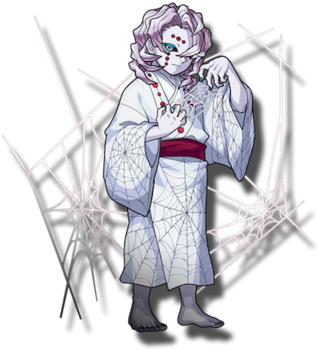
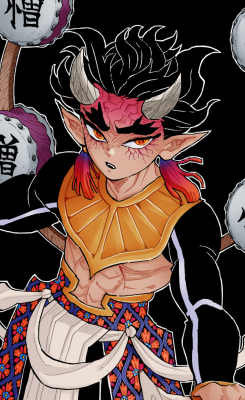

The Demons
| Muzan Kibutsuji (The Demon King):"Only feelings are eternal and undying. That is true. I do not remember a single human being I have killed. Flesh dies and that is the end. However... their feelings passed on and never fell to ruin and have even defeated me. I have witnessed that fact with my own eyes and I was so moved that I trembled". |
 Doma: "The idea of divine punishment is a joke. Wicked people going to hell after death? If humans didn't think like that, people with weak spirits couldn't keep going, right? I truly believe... that humans are pathetic". |
| Akaza: "You misunderstand, Tanjiro. I only despise the weak. I only spit on weaklings. Yes. Weaklings make me sick. It is the law of nature that they be weeded out". |
 Kaigaku: "Until you die, you haven't lost. You may rub your face in the dirt... you may lose your home or drink muddy water... people may curse you for stealing money... but as long as you live on... you can win someday. You will win. I have moved forward with that belief". |
|  Kokushibo: "The ugliness of not admitting defeat even though they took my head, chopped me up and crushed me. Living in disgrace. Have I lived hundreds of years for this? Was I so afraid of defeat that I became a monster? Did I want to be strong even if it meant eating people? Did I become this miserable creature because I didn't want to die? No. Yoriichi... I just wanted to be you". |
 Nezuko Kamado (Tanjiro's sister): "My dear brother! I'm so sorry. I'm sorry I didn't understand for so long. I put everything on your shoulders. Why is it you who always has to suffer? Why do kind people who struggle every day get trampled over and over? It's frustrating but don't give in! Let's go home. Let's go back home together". |
|  Rui "Since I was the one with the most power, there was no one who could protect me... who could shield me. The more powerful I became, the less I remembered about being a human. And I was losing sight of what it was that I wanted to do. Seeking a bond that I could never claim for myself". |
 Hantengu: "Since the day I was born I've never lied... not even once! I'm a good natured weakling! I deserve pity, but no one has any sympathy for me". |